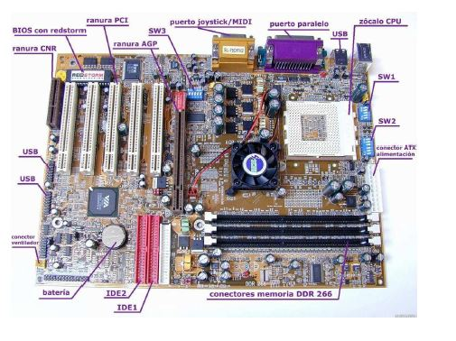

COMPONENTES DE LA PLACA BASE
Entre los componentes de la placa hay que destacar los siguientes:
- El zócalo del microprocesador (socket), donde se inserta el procesador para, a través
de la placa base, conectarse con el resto de componentes.
- Las ranuras para los módulos RAM (RAM slots), donde se insertan los módulos de
memoria RAM.
- El chipset, formado por dos chips: puente norte (north bridge) y puente sur (south
bridge).
- Las ranuras de expansión (expansion slots), donde se conectarán las tarjetas de
expansión que se deseen instalar en el equipo para mejorar o ampliar las prestaciones
del sistema.
- BIOS: contiene las instrucciones para iniciar el equipo, localizar las unidades del mismo
y ejecutar las rutinas de arranque necesarias. Actualmente, se suele almacenar en
memorias flash.
- Memoria CMOS: contiene la configuración del sistema y la conserva aunque el
ordenador no esté conectado a la corriente, pues está alimentada por una pequeña
pila o batería (battery).
- Los conectores de energía (power connectors), conexiones para alimentar todos los
componentes de la placa y algunos ventiladores a través de los cables provenientes de
la fuente de alimentación.
- Los conectores internos y externos, donde se conectan los dispositivos IDE, SATA, USB,
FireWire, serie, paralelo, PS/2, etc.

gabriellb99.github.io